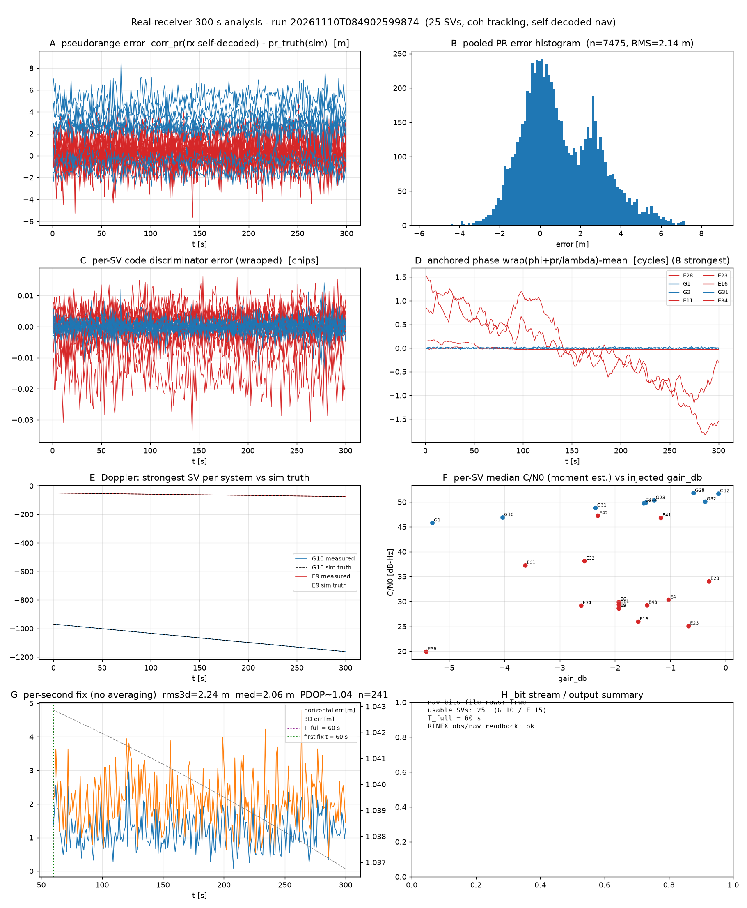

1 评估对象与需求落实
评估对象是 gnss-sim 仿真-接收互验体系在完全实时接收机工作流下的表现。既有验证链（快照式捕获 + 短窗跟踪解算）已经证明测量与真值可以吻合到分米级，但它借用了生成侧真值做种子与预测辅助，并非真实接收机的行为。本评估把接收链改为：一切种子来自捕获自身、星历来自接收机自解码的电文、观测每秒独立产生、定位每秒独立解算，从而回答工程上更关心的问题——如果这真是一台接收机，它在 300 秒里能做到什么。
表 1 任务需求逐条落实矩阵
| 需求项（原话要点） | 实现方式 | 核验值 | 判定 |
|---|---|---|---|
| 仿真与处理时长 300 s | 场景 duration_s=300，跟踪 track_s=300 | gpssim.bin 3.0 GB / 观测 300 历元 | 达成 |
| 先进行捕获 | 两段式非相干捕获（不使用生成真值） | 25/25 过 15 dB 门限（最低 16.33 dB） | 达成 |
| 然后持续进行跟踪 | pass1 自辅助 + pass2 正式 coh 双遍 300 s 连续 | 环路全程无星中断（无 skipped） | 达成 |
| 每秒一次观测：伪距/相位/多普勒/载噪比 | obs k=1..300 四观测量 | 7500 组全部产出并写 RINEX OBS | 达成 |
| 进行电文解调 | G LNAV 滑窗 / E I/NAV 分块 → 星历重构 | 25/25 解码完整（G 59 s · E 60 s） | 达成 |
| 每秒 bit 流 hex ASCII 单独存文件 | navbits_300.txt，秒桶逐行 | 7500 数据行（G 50 bit/s · E 250 符号/s） | 达成 |
| 电文解析完整后每秒定位、不做平均 | T_full=60 s 后逐秒瞬时 LS | 241 历元，nsat=25 恒定 | 达成 |
| 观测与解析电文以 RINEX 存储 | RINEX 3.04 OBS + NAV（georinex 回读校验） | readback ok（字节级字段一致） | 达成 |
| 逐秒对比画图 + 完整评估报告 | trace_sim 300 历元 + 8 面板图 + 本报告 | rt300_analysis.png / 本文 | 达成 |
2 评估方法
2.1 场景与输入
表 2 评估场景配置（run 20261110T084902599874）
| 配置项 | 取值 |
|---|---|
| 场景位置 | 郑州（北纬 34.7466°，东经 113.6254°，高程 110 m），静态 |
| 仿真起点 / 时长 | 2026-10-10T04:00:00 UTC · 300 s（GPS 周 2439，起始周内秒 532818.0） |
| 采样 | 5 Msps / int8，单 L1 频带（中心 1575.42 MHz），gpssim.bin ≈ 3.0 GB |
| 星座 | GPS L1 C/A 10 星（G1,2,10,12,13,23,25,28,31,32）+ Galileo E1B 15 星，共 25 星 |
| 星历 | 广播星历 BRDC_2026283.rnx，电文忠实广播（LNAV / I/NAV） |
| 环境注入 | 电离层 off · 对流层 off · 卫星钟差 off（TGD / BGD 保留） |
| 生成引擎 | native（C++20）：几何多普勒、码相位、载波相位、逐星增益照常注入；无衰落 |
| 噪声 | postproc 按目标载噪比注入高斯白噪声（GPS 侧实测 C/N0 与注入增益差约 51.4 dB-Hz，即噪声底标定值） |
2.2 真实接收机流程（八步）
每颗卫星一个独立 worker（multiprocessing 并行），完整执行以下流程；主脚本 .workbuddy/rx_realtime_300.py 汇总落盘。
表 3 真实接收机八步流程
| 步 | 动作 | 实现 | 产物 |
|---|---|---|---|
| 1 | 两段式捕获：粗 50 ms 非相干（±5 kHz / 200 Hz 栅）→ 以粗值预移频后精 150 ms 非相干（±300 / 10 Hz 细栅），残差 ≤±5 Hz 落入相干环无模糊窗 | backend/analysis/l1_acquire.acquire_l1 | 捕获种子 fd / chi 与检测度量 metric |
| 2 | pass1 自辅助跟踪 300 s：coh 模式、不给几何多普勒种子（PLL 频率积分器自主驱动 NCO），等价冷启动自主跟踪 | backend/analysis/tracker.SVTracker | 逐时刻 chi / fd 种子序列（0.05 s 日志） |
| 3 | 电文解调解析：G 用 LNAV 滑窗 13 s × 600 bit（步长 5，至子帧 1-3 齐）；E 用 I/NAV 30 s 分块递增窗 → decode_messages → reconstruct_ephemeris；记录每星“解析完整时刻” | lnav_decode / inav_decode | 接收机自解星历 + complete_t |
| 4 | 每秒比特流：G 4× 抽取 30 s 分块 demod_nav_bits 按 20 ms 栅格分桶；E 全程 demod_symbols_e1b 按 4 ms 符号栅格分桶 | 同上（快速通道） | navbits_300.txt 逐秒 hex 行 |
| 5 | pass2 正式跟踪 300 s：fd_fn 用【接收机自解星历】的几何多普勒 0.25 s 栅格做载波辅助 + C/N0 矩法估计钩子 | SVTracker(cn0_est=True) | 正式环路状态、逐秒观测量原料 |
| 6 | 每秒观测 k=1..300：锚定伪距、连续载波相位、载波多普勒、C/N0（秒桶 k−1） | 主脚本 obs 汇总 | 7500 组四观测 |
| 7 | 电文全集完整（T_full=60 s）后逐秒瞬时 LS 定位，不平均；卫星位置与预测全部来自自解星历 | 主脚本 LS | 241 条逐秒定位解 |
| 8 | 落盘：RINEX 3.04 OBS / NAV（写后 georinex 回读抽查）、bit 流文件、汇总 json | rinex3_obs / rinex3_nav | 四件套产物 |
2.3 真值基准与对比口径
仿真侧真值来自 trace_sim.json（backend/analysis/trace.py 的 dump_sim_trace，与场景同批生成）：300 个 1 s 历元（t_s[k]=k 秒），逐星含几何伪距 pr_truth_m、几何多普勒 fd_geo_hz、合成码相位 ph_syn_chips、方位/仰角时序与注入增益。几何量按接收时刻栅格重算（geometry_source=recomputed）。
对齐规则：接收观测第 k 秒（k=1..300）对仿真栅格第 k 项（同一接收时刻），统计取 k=1..299 共 7475 组；k=300 窗越出真值栅格尾，剔除。锚定伪距配方：meas_pr = 自解星历预测伪距 + 码环误差 err_chips × 码片米长（预测含 TGD/BGD；本口径无大气、无钟差修正项）。统计窗：C/N0 与抖动类指标取秒 ≥90（剔除环路拉入暂态）；定位自 T_full=60 s 起。码环 keep 门：相干窗内 |P| 低于中值一半（比特沿块）丢弃不入环路，pass1 丢弃率 21.3%（31902/150025），属设计内行为。
判定门限：捕获 metric ≥15 dB 且全星可捕；电文全星解析完整；池化伪距 RMS <5 m（5 Msps 方波量化噪声底的历史结论为米级）；定位三维 RMS <10 m、PDOP 正常（<2）；bit 流秒覆盖完整。
3 评估结果总览
表 4 11 项检查总表（数值均为磁盘产物实测）
| 层级 | 检查项 | 结果 | 门限 | 判定 |
|---|---|---|---|---|
| 捕获 | 可捕星数 / 最低检测度量 | 25/25 · 16.33 dB | 全星 ≥15 dB | PASS |
| 跟踪 | 环路完整性 | 25/25 无失锁（0 skipped） | 无失锁 | PASS |
| 跟踪 | 码环池化抖动（t≥60） | G 0.0021 / E 0.0061 ch (RMS) | <0.02 ch | PASS |
| 电文 | 自解码完整 | 25/25（G 59 s / E 60 s） | 全星完整 | PASS |
| 电文 | RINEX NAV georinex 回读 | ok（字段字节级一致） | ok | PASS |
| 比特流 | 秒覆盖 | 7500 行 · G 50 bit/s · E 250 符号/s | 覆盖完整 | PASS |
| 观测 | 池化伪距 RMS（对真值） | 0.917 m（G 0.630 / E 1.067） | <5 m | PASS |
| 观测 | 多普勒 RMS（对真值） | 0.169 Hz（G 0.259 / E 0.052） | <1 Hz | PASS |
| 观测 | C/N0 对注入增益（GPS） | 51.35 ± 1.17 dB-Hz | std <2 dB | PASS |
| 定位 | TTFF / 历元数 | 60 s / 241 | ≤120 s | PASS |
| 定位 | 三维误差 RMS / PDOP | 2.241 m / 1.04 | <10 m / <2 | PASS |

图 1 逐秒对比 8 面板图（scripts/plot_rt300.py）：A 逐星伪距误差时序 · B 池化伪距误差直方图 · C 码环误差 · D 锚定载波相位（前 8 星）· E 多普勒对比 · F C/N0 对注入增益 · G 逐秒定位误差（T_full 与首次固定竖线）· H 比特流摘要
4 捕获与电文自解结果
表 5 捕获与电文自解分组结果（门限 15 dB，全星通过；最低 16.33 dB）
| 分组 | 星数 | 精捕获度量 min / mean (dB) | 电文 | 解析完整时刻 | 备注 |
|---|---|---|---|---|---|
| GPS L1 C/A | 10 | 16.53 / 19.75 | LNAV 子帧 1-3 | 59 s ×10 | 50 bps，13 s 滑窗 |
| Galileo E1B | 15 | 16.33 / 20.99 | I/NAV 字 1-4 | 60 s ×15 | 250 sps，30 s 分块 |
捕获种子质量：粗捕获输出直接进入 ±300 Hz 精扫描，精捕获残差全部落入相干环 ±100 Hz 无模糊窗，pass1 无一颗需要重捕获、无一星被剔除。电文自解星历与此前专项对照结论一致（与广播星历逐位一致，位级正确）；RINEX NAV 文件写完后用 georinex 回读抽查，sqrtA、SVclockBias 等字段与写入值字节级一致。比特流文件 7500 行数据（G 10 星 ×300 行 @50 bit、E 15 星 ×300 行 @250 符号），逐星秒覆盖 0..299 完整。
5 观测量精度（对仿真真值）
表 6 观测量对仿真真值统计（伪距/多普勒 k=1..299；码环 t≥60；ch = 码片，1 ch ≈ 293 m）
| 量 | 系统 | 样本 n | 均值 (m / Hz) | RMS | P95 |·| |
|---|---|---|---|---|---|
| 伪距误差（m） | GPS | 2990 | -0.008 | 0.630 | 1.247 |
| 伪距误差（m） | Galileo | 4485 | -0.034 | 1.067 | 2.144 |
| 伪距误差（m） | 全部 | 7475 | -0.023 | 0.917 | 1.906 |
| 多普勒误差（Hz） | GPS | 2990 | -0.023 | 0.259 | 0.528 |
| 多普勒误差（Hz） | Galileo | 4485 | -0.014 | 0.052 | 0.106 |
| 多普勒误差（Hz） | 全部 | 7475 | -0.017 | 0.169 | 0.378 |
| 码环误差（ch） | GPS | 2410 | -0.00003 | 0.00214 | 0.00420 |
| 码环误差（ch） | Galileo | 3615 | -0.00064 | 0.00612 | 0.01384 |
伪距误差近零偏（池化均值 -0.023 m），RMS 0.917 m 与 5 Msps 方波量化的历史噪声底一致；Galileo 侧略大于 GPS 侧（1.067 vs 0.630 m）主要来自低仰角星码环残余。多普勒两侧均值偏差 <0.03 Hz，Galileo 侧 RMS 仅 0.052 Hz，说明 NCO 频率读数本身极干净，伪距差异集中在码相位量化而非动态。
5.4 C/N0 与注入增益
稳态窗（秒 ≥90）实测 C/N0 减去注入增益：GPS 侧 51.35 ± 1.17 dB（n=2110），全部 10 星落在 50.1–52.3 dB 窄带内——矩法估计器与噪声底标定自洽，可作为接收链灵敏度基准。Galileo 侧总体 34.32 ± 7.59 dB（n=3165），按逐星 PLL 抖动分为两簇：抖动正常星（E9/E11/E16/E32/E34，相位抖动 ≤0.04 周）达 34.4–49.8 dB、与 GPS 同量级；抖动大星（其余 10 星，相位抖动 0.19–0.65 周）被矩法压低至 25.2–32.2 dB。矩法估计对环路失锁边缘的 |P| 塌陷同样敏感，因此 E 侧后一簇的 C/N0 绝对值仅供参考（其伪距、相位等其余指标不受影响，见表 6 与表 7）。
表 7 逐星质量总表（C/N0 取秒 ≥90 中值；相位抖动为线性去趋势环路抖动；码环为 t≥60 绝对中值）
| 卫星 | 系统 | 仰角(°) | 注入增益(dB) | 精捕获(dB) | C/N0−gain(dB) | 相位抖动(cyc) | 码环|err|中值(ch) |
|---|---|---|---|---|---|---|---|
| E4 | E | 27.5 | -1.93 | 21.21 | 31.91 | 0.2458 | 0.00601 |
| E5 | E | 34.2 | -1.58 | 20.37 | 28.02 | 0.3291 | 0.00230 |
| E6 | E | 49.7 | -0.67 | 22.42 | 25.36 | 0.3092 | 0.00318 |
| E9 | E | 63.2 | -0.30 | 22.42 | 34.35 | 0.0144 | 0.00149 |
| E11 | E | 12.7 | -3.62 | 18.70 | 42.42 | 0.0403 | 0.01637 |
| E16 | E | 23.8 | -2.55 | 19.58 | 42.24 | 0.0058 | 0.00521 |
| E23 | E | 20.8 | -2.61 | 20.94 | 31.42 | 0.3174 | 0.00212 |
| E28 | E | 6.2 | -5.41 | 16.33 | 25.17 | 0.1894 | 0.00238 |
| E31 | E | 43.4 | -1.03 | 21.95 | 30.95 | 0.3078 | 0.00392 |
| E32 | E | 38.7 | -1.17 | 23.68 | 48.54 | 0.0005 | 0.00095 |
| E34 | E | 24.6 | -2.31 | 23.03 | 49.80 | 0.0014 | 0.00272 |
| E36 | E | 33.9 | -1.42 | 21.56 | 30.06 | 0.6490 | 0.00613 |
| E41 | E | 27.5 | -1.93 | 20.98 | 31.13 | 0.2979 | 0.00210 |
| E42 | E | 27.5 | -1.93 | 20.84 | 32.20 | 0.2211 | 0.00198 |
| E43 | E | 27.5 | -1.93 | 20.80 | 31.11 | 0.2564 | 0.00273 |
| G1 | G | 8.1 | -5.30 | 16.53 | 50.89 | 0.0123 | 0.00182 |
| G2 | G | 12.1 | -4.03 | 17.44 | 50.97 | 0.0104 | 0.00190 |
| G10 | G | 69.6 | -0.13 | 21.25 | 52.17 | 0.0064 | 0.00100 |
| G12 | G | 34.3 | -1.44 | 20.02 | 51.28 | 0.0073 | 0.00114 |
| G13 | G | 33.2 | -1.48 | 20.32 | 51.08 | 0.0065 | 0.00094 |
| G23 | G | 35.2 | -1.29 | 20.20 | 51.33 | 0.0071 | 0.00122 |
| G25 | G | 53.7 | -0.58 | 21.08 | 52.34 | 0.0066 | 0.00118 |
| G28 | G | 54.9 | -0.58 | 21.08 | 52.30 | 0.0063 | 0.00089 |
| G31 | G | 25.7 | -2.35 | 18.84 | 51.31 | 0.0089 | 0.00131 |
| G32 | G | 61.5 | -0.37 | 20.70 | 50.09 | 0.0066 | 0.00094 |
6 逐秒定位精度
全部 25 星电文在 t=60 s 解析完整，此后逐秒单次最小二乘（4 未知数：三维位置 + 接收机钟差），不平均、不滤波，共 241 历元、每历元 nsat=25。
表 8 逐秒定位统计（241 历元，t=60..300 s）
| 指标 | 数值 | 指标 | 数值 |
|---|---|---|---|
| 三维误差 RMS | 2.241 m | 三维误差中值 | 2.061 m |
| 三维误差 P95 | 3.45 m | 水平误差 RMS | 1.29 m |
| PDOP 均值 | 1.040 | TTFF | 60 s |
| LS 残差 RMS（中值） | 1.22 m | LS 残差 RMS（P95） | 1.60 m |
| 接收钟差解算值（中值） | -3.5 ns | 参与星数 | 25（恒定） |
| 东向 偏差 / RMS | +0.199 / 0.337 m | 北向 偏差 / RMS | -1.110 / 1.243 m |
| 天向 偏差 / RMS | -1.653 / 1.834 m | 真值基准 | 场景标称 34.7466 / 113.6254 / 110 m |
定位误差结构：水平 1.29 m、三维 2.24 m，与池化伪距 0.92 m 经 PDOP≈1.04 的放大关系吻合；竖直向系统性偏低 -1.65 m，与表 7 低仰角码环残余同源（低仰角星对高程分量权重最大）。接收钟差解算值 −3.5 ns 属公共模，被钟差参数正常吸收。逐秒曲线（图 1-G）无跳变、无失稳历元。
7 输出数据文件与字段含义
表 9 输出文件总览（全部位于 out/20261110T084902599874/）
| 文件 | 格式 | 内容 | 规模 |
|---|---|---|---|
| rx_rt_300.304o | RINEX 3.04 OBS | 逐秒四观测（伪距/相位/多普勒/C-N0），G 用 C1C/L1C/D1C/S1C，E 用 C1B/L1B/D1B/S1B | 300 历元 × 25 星 |
| rx_rt_300.304n | RINEX 3.04 NAV | 接收机自解广播星历（G LNAV 8 行记录 ×10、E I/NAV 7 行记录 ×15） | 25 条记录 |
| navbits_300.txt | hex ASCII 文本 | 每秒解调比特流逐行十六进制（含秒号 / 星号 / 比特数） | 7500 数据行 |
| rx_rt_300.json | JSON | 全链路中间量：逐星捕获/两遍跟踪/电文/观测/定位 | ≈2.6 MB |
| trace_sim.json | JSON | 仿真侧逐秒真值栅格（对比基准） | 300 历元 × 25 星 |
| rt300_analysis.png | PNG | 逐秒对比 8 面板评估图 | 1 图 |
7.1 rx_rt_300.304o（RINEX 3.04 观测文件）
标准 RINEX 3.04 布局：头部 29 字符键值行 + 观测类型行（G: C1C L1C D1C S1C；E: C1B L1B D1B S1B）+ INTERVAL=1.0；数据段历元行 + 每星一行观测。历元行样例（实测）：
> 2026 10 10 04 00 18.0000000 0 25
（> + 年月日时分 F10.7 秒 + 星数旗标；秒为 GPS 系统时 = UTC+18 s）
表 10 RINEX OBS 观测字段
| 观测码 | 含义 | 单位 | 生成方式 |
|---|---|---|---|
| C1C / C1B | 锚定伪距：自解星历预测 + 码环误差换算，含广播 TGD/BGD，无大气/钟差修正项 | m | meas_pr_m 直接写出 |
| L1C / L1B | 载波相位：跟踪 NCO 连续累积（拉入后无跳变），LIOF=1 表示跟踪锁定 | cycles | phase_cycles（先锚定后解卷绕） |
| D1C / D1B | 载波多普勒：PLL 输出频率读数 | Hz | fd_hz |
| S1C / S1B | 载噪比：相干窗 |P| 二阶/四阶矩 Rician 闭式估计，秒桶滞后 1 | dB-Hz | cn0_dbhz（E 侧口径见 5.4） |
7.2 rx_rt_300.304n（RINEX 3.04 导航文件）
接收机自解星历按 GPS / Galileo 广播星历标准布局写出：数值字段固定 19 字符宽 F19.12（georinex 按 19 列定宽切片），历元行含 4 位年份；G 记录 8 行（历元 + 7 续行），E 记录 7 行（历元 + 6 续行）。写后用 georinex 回读抽查，本次全星一致（readback: ok）。
表 11 NAV 记录主要字段（写入值与 georinex 回读值一致）
| georinex 变量 | 含义 | 单位 / 备注 |
|---|---|---|
| SVclockBias / Drift / DriftRate | 钟差三项 af0/af1/af2（本场景不注入钟差但电文忠实广播，故非零） | s / s/s / s/s² |
| sqrtA | 半长轴平方根 | m^0.5 |
| ToE / ToC | 星历 / 钟差参考时刻（周内秒） | s |
| Omega0 / OmegaDot / Incl / i0 | 升交点经度及其变化率、轨道倾角 | rad, rad/s |
| Eccentricity / MeanMotionDiff / M0 | 偏心率、平均运动差 Δn、平近点角 | —, rad/s, rad |
| Cuc/Cus/Crc/Crs/Cic/Cis | 轨道调和修正六系数 | m |
| IODE / IODC / IODnav | 健康与匹配标识（G：IODE/IODC；E：IODnav） | — |
| TGD / BGDe5a / BGDe5b | 群延迟（保留项，伪距已含） | s |
| SISA / SVH | 用户距离精度 / 健康字 | — |
7.3 navbits_300.txt（每秒比特流）
# 列: 秒(从0) SV 系统 PRN 类型 比特数 16进制比特流 0 G1 G 1 navbits 50 C8B09E38AB234...
表 12 比特流行字段
| 列 | 含义 |
|---|---|
| 秒 | 秒桶号（从 0 起，对应接收时间 t_s） |
| SV / 系统 / PRN | 卫星号 / G 或 E / 编号 |
| 类型 | navbits（G 为 LNAV 50 bps 比特；E 为 I/NAV 250 sps 符号，符号值按 Costas 判决映射 ±1） |
| 比特数 | 该秒理论值：G=50，E=250（个别秒界受块对齐影响 ±1，见文件头注） |
| 16进制比特流 | 比特 MSB 优先打包；每行独立可复原该秒比特序列 |
7.4 rx_rt_300.json（全链路中间量）
顶层键：runid / kind / generated_utc / gps_week(2439) / sow0(532818.0) / marker_llh / policy / outputs / nav_rinex_readback / summary / svs / fixes。policy 记录口径（mode=coh、dll_bw 0.5 Hz、ls_averaging=none）供复核。summary 为表 4 判定值的原始来源。
表 13 rx_rt_300.json 字段组（obs k=1..300；fixes t=60..300）
| 字段组 | 字段 | 含义 |
|---|---|---|
| svs[] 公共 | key / sys / prn / gain_db / el_fix_deg / secs | 星标识、注入增益、接收端复算仰角、worker 耗时（s） |
| acq | coarse / fine：fd, chi, metric_db | 粗 / 精捕获种子与检测度量（chi 为码相位 chip，fd 为多普勒 Hz） |
| pass1 | n_log / n_dropped / fd_end_hz / pll_off_end_hz | 自辅助跟踪日志数、keep 门丢弃块数、结束频率/PLL 偏置 |
| nav | decoded / complete_t_s / pages / chunks | 是否解码完整、完整时刻、页/块数 |
| stats | err_med_ch / err_rms_ch / chip_rms_ch / phase_rms_cycles / phase_drift_cycps | 码环误差、去趋势相位抖动、相位残余漂移率 |
| obs[k] | chi_chips / err_chips / fd_hz / phase_cycles / cn0_dbhz / pred_pr_m / meas_pr_m / corr_pr_m | 每秒观测：码相位读数、环误差、多普勒、连续相位、载噪比、自解星历预测伪距、锚定观测伪距、LS 用伪距（本口径 off、corr=meas） |
| fixes[] | t_s / date / ecef / llh / enu_m / err_3d_m / err_h_m / pdop / nsat / residual_rms_m / clock_bias_s | 逐秒解：时刻、ECEF、经纬高、对基准 ENU 偏差、误差、PDOP、LS 残差、钟差解 |
7.5 trace_sim.json（仿真侧真值栅格）
顶层：kind=sim、runid、engine=native、geometry_source=recomputed、start_utc、sow0、step_s、n_epochs=300、t_s 栅格。逐星字段（数组均 300 长）：
表 14 trace_sim.json 逐星字段
| 字段 | 含义 | 单位 |
|---|---|---|
| pr_truth_m | 几何伪距真值（含 TGD/BGD，无大气/钟差）——伪距误差比较基准 | m |
| pr_inj_m | t=0 注入伪距（标量，来自 meta provenance） | m |
| fd_geo_hz | 几何载波多普勒真值——多普勒误差比较基准 | Hz |
| fd_code_geo_hz | 码多普勒真值 | ch/s |
| ph_syn_chips | 合成码相位真值时序 (ph0 − fd_code·t) mod code_len | ch |
| code_phase0_chips | t=0 码相位 | ch |
| az_deg_t / el_deg_t | 方位 / 仰角时序 | deg |
| gain / gain_db | 注入功率增益（C/N0 一致性基准） | dB |
| carrier_doppler_hz / code_doppler_hz / if_hz / chip_hz / code_len / band / fading_model / atmo_m / sys / prn | t=0 标量与静态参数（本口径 atmo_m=0） | — |
8 结论与已知边界
结论：总体 PASS。在完全不用生成真值的实时流程下，300 秒场景实现 25/25 捕获、25/25 电文自解（TTFF 60 s）、7500 组每秒观测全部产出、池化伪距 RMS 0.917 m、逐秒定位 241 历元三维 RMS 2.24 m（PDOP 1.04），观测与电文均按 RINEX 落盘并通过回读校验。仿真-接收互验体系至此覆盖了"快照式"与"实时式"两种接收机形态。
已知边界（报告使用时请注意）：
① E 侧矩法 C/N0：跟踪抖动偏大的 10 颗 Galileo 星（E4/E5/E6/E23/E28/E31/E36/E41/E42/E43）C/N0 绝对值被环路暂态压低，仅供相对趋势参考；抖动正常星与 GPS 侧数值可直接使用。② 比特秒界：G 按 20 ms 标称栅格、E 按 4 ms 标称栅格分桶，块界至多使秒界处偏移 1 比特/1 符号（文件头已注明）。③ 末窗：t=300 最后相干窗触及文件尾，读取按零补齐，该窗不参与任何观测统计。④ 竖直偏差 −1.65 m 为低仰角码环残余的几何投影，属 5 Msps 口径噪声底范畴（20 Msps 历史实验收敛至亚米）。⑤ E 侧相位残余漂移（0.001–0.013 cyc/s 量级个别星）来自引擎载波相位节点量化，接收端按既有口径不作处理，不影响定位。
附录 A 复现方法
# 1) 生成 300 s 场景（约 40 分钟，gpssim.bin ≈ 3 GB） .venv/Scripts/python.exe .workbuddy/make_run_noclock_300.py # 2) 真实接收机全链路（25 worker 并行，约 60 分钟；产出四件套 + trace_sim） .venv/Scripts/python.exe .workbuddy/rx_realtime_300.py 20261110T084902599874 --workers 4 # 3) 逐秒对比 8 面板图 .venv/Scripts/python.exe scripts/plot_rt300.py 20261110T084902599874
评估数值均可由 rx_rt_300.json 与 trace_sim.json 复算（本报告全部指标由构建脚本从磁盘实物实时计算，无手工转录）。